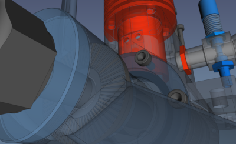
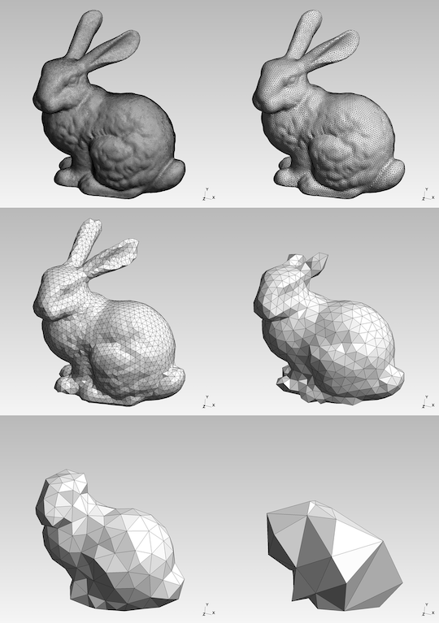

Summer Update for FreeCAD & Debian Science Work
Hello, and welcome to my "summer update" on my free software work on FreeCAD and the Debian Science team. I call it a summer update because it was winter when I last wrote, and quite some time has elapsed since I fell out of the monthly update habit. This is a high-level summary of what I've been working on since March.
FreeCAD 0.18 Release & Debian 10 Full Freeze Timing
The official release date of FreeCAD 0.18 ( release notes ) is March 12, 2019, although the git tag for it wasn't pushed until March 14th. This timing was a bit unfortunate as the full freeze for Debian 10 went into effect March 12th, with a de-facto freeze date of March 2nd due to the 10 day testing migration period. To compound things, since this was my first Debian release as a packaging contributor, I didn't do things quite right such that while I probably could have gotten FreeCAD 0.18 into Debian 10, I didn't. Instead, what's available is a pre-release version from about a month before the release which is missing a few bugfixes and refinements.
On the positive side, this is an impetus for me to learn about Debian Backports, a way to provide non-bugfix updates to Debian Stable users. The 0.18 release line has already had several bugfix releases; I've currently got Debian Testing/Unstable as well as the Ubuntu Stable PPA up-to-date with version 0.18.3. As soon as I'm able, I'll get this version into Debian Backports, too.
FreeCAD PPA Improvements
Another nice improvement I've recently made is migrating the packaging for the Ubuntu Stable and Daily PPAs to Debian's GitLab instance at https://salsa.debian.org/science-team/freecad by creating the ppa/master and ppa/daily branches. Having all the Debian and Ubuntu packaging in one place means that propagating updates has become a matter of git merging and pushing. Once any changes are in place, I simply have to trigger an import and build on Launchpad for the stable releases. For the daily builds, changes are automatically synced and the debian directory from Salsa is combined with the latest synced upstream source from GitHub, so daily builds no longer have to be triggered manually. However, this has uncovered another problem in our process which being worked on at the FreeCAD forums. (Thread: Finding a solution for the 'version.h' issue
Science Team Package Updates
The main Science Team packages I've been working on recently have been OpenCASCADE, Netgen, Gmsh, and OpenFOAM.
For OpenCASCADE, I have uploaded the third bugfix release in the 7.3.0 series. Unfortunately, their versioning scheme is a bit unusual, so this version is tagged 7.3.0p3. This is unfortunate because dpkg --compare-versions 7.3.0p3+dfsg1 gt 7.3.0+dfsg1 evaluates to false. As such, I've uploaded this package as 7.3.3, with plans to contact upstream to discuss their bugfix release versioning scheme. Currently, version 7.4.0 has an upstream target release date for the end of August, so there will be an opportunity to convince them to release 7.4.1 instead of 7.4.0p1. If you're interested in the changes contained in this upload, you can refer to the upstream git log for more information.
In collaboration with Nico Schlömer and Anton Gladky, the newest Gmsh, version 4.4.1, has been uploaded to wait in the Debian NEW queue. See the upstream changelog for more information on what's new.
I've also prepared the package for the newest version of Netgen, 6.2.1905. Unfortunately, uploading this is blocked because 6.2.1810 is still in Debian NEW. However, I've tested compiling FreeCAD against Netgen, and I've been able to get the integration with it working again, so once I'm able to do this upload, I'll be able to upload a new and improved FreeCAD with the power of Netgen meshing.
I've also begun working on packaging the latest OpenFOAM release, 1906. I've gotten a little sidetracked, though, as a pecularity in the way upstream prepares their tarballs seems to be triggering a bug in GNU tar. I should have this one uploaded soon. For a preview in what'll be coming, see the release notes for version 1906.
GitLab CI Experimentation with salsa.debian.org
Some incredibly awesome Debian contributors have set up the ability to use GitLab CI to automate the testing of Debian packages (see documentation.)
I did a bit of experimentation with it. Unfortunately, both OpenCASCADE and FreeCAD exceeded the 2 hour time limit. There's a lot of promise in it for smaller packages, though!
Python 2 Removal in Debian Underway

Per pythonclock.org, Python 2 has less than 5 months until it's end-of-life, so the task of removing it for the next version of Debian has begun. For now, it's mainly limited to leaf packages with nothing depending on them. As such, I've uploaded Python 3-only packages for new upstream releases of python-fluids (a fluid dynamics engineering & design library) and python-ulmo (provides clean & simple access to public hydrology and climatology data).
Debian Developer Application
I've finally applied to become a full Debian Developer, which is an exciting prospect. I'll be more able to enact improvements without having to bug, well, mostly Anton, Andreas, and Tobias. (Thanks!) I'm also looking forward to having access to more resources to improve my packages on other architectures, particularly arm64 now that the Raspberry Pi 4 is out and potentially a serious candidate for a low-powered FreeCAD workstation.
The process is slow and calculating, as it should be, so it'll be some time before I'm officially in, but it sure will be cause for celebration.
Google Summer of Code Mentoring
CC-BY-SA-4.0, Aswinshenoy.
I'm mentoring a Google Summer of Code project for FreeCAD this year! (See forum thread.) My student is quite new to FreeCAD and Debian/Ubuntu, so the first half of the project has involved relatively the deep-end topics of using Debian packaging to distribute bugfixes for FreeCAD and to learn by exploring related packages in its ecosystem. In particular, focus was given to OpenCAMLib, since there is a lot of user and developer interest in FreeCAD's potential for generating toolpaths for machining and manufacturing the models created in the program.
Now that he's officially swimming and not sinking, the next phase is working on making development and packaging-related improvements for FreeCAD on Windows, which is in even rougher shape than Debian/Ubuntu, but more his area of familiarity. Stay tuned for the final results!
Thanks to my sponsors
This work is made possible in part by contributions from readers like you! You can send moral support my way via Twitter @thekurtwk. Financial support is also appreciated at any level and possible on several platforms: Patreon, Liberapay, and PayPal.
Comments
Comments powered by Disqus